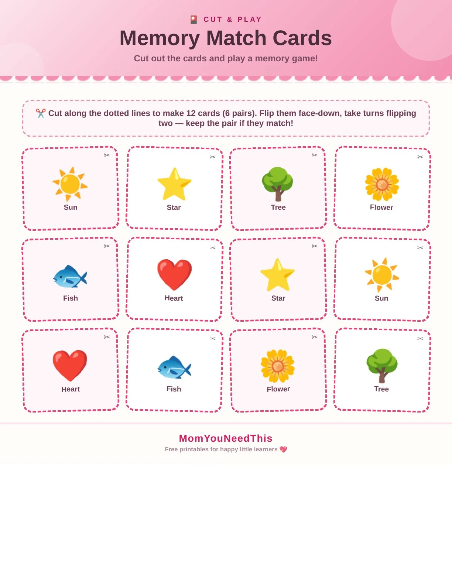

Printable Memory Cards For Kids Cut Out, Flip Over & Find The Pairs
Turn any afternoon into game time with printable memory cards — cut them out, flip them over, and watch your child’s memory grow with every match.
Quick Answer
These free printable memory cards give toddlers and preschoolers a classic matching game to cut out and play at home. The set includes colorful picture pairs sized for little hands. Download and print at home with no signup needed — just cut, shuffle, and play to build memory, concentration, and turn-taking skills.
At a Glance
- Ages: Toddlers and preschoolers
- Activity: A classic memory matching game to cut out and play
- Skills: Memory, matching and concentration
- Format: Printable card game (PDF)
- Cost: Free, no signup
🎴 How Do Memory Cards Work?
Memory (also called Concentration) is played with pairs of picture cards laid face-down in a grid. Players take turns flipping two cards — if they match, the player keeps the pair; if not, the cards flip back and everyone tries to remember where they were. It is simple to learn and endlessly replayable.
📋 How To Use These Activities
Print the memory card sheet on cardstock if you have it (regular paper works too — just avoid playing on a glass table where cards show through). Cut out the cards together, then start with just 6 cards (3 pairs) face-up for toddlers, flipping to face-down as they get the hang of it. Always let your child go first. The print button opens the full-size page in a new tab if you prefer to print from there.

🖨️ Download Your Free Printable Memory Cards
Cut out these colorful memory cards and start playing today. Print the sheet, grab the scissors, and deal out the fun — no signup needed.
⬇️ Download Free Printable 🖨️ Print🎁 Free printable for toddlers & preschoolers
🏆 Make Memory Night A Tradition
Keep the cut-out cards in a zip bag and pull them out for a quick game after dinner. Add pairs as your child improves, from 3 pairs up to 6 or 8. Let siblings team up against a parent, or time how fast your preschooler can clear the whole grid. Repetition is where the memory magic happens.
💡 Why Play Memory Card Games?
Memory games are one of the best workouts for a young brain: they strengthen working memory, teach turn-taking and patience, and build the focus needed for school tasks. Because the game is social, it also grows language as children name pictures and celebrate matches together.
🔗 More Free Printables You'll Love
Keep the learning going with these related free activities.
🌙 Shadow Matching 🐶 Animal Matching 🔍 Same & Different📚 Keep Exploring Matching Games
Discover more free matching and memory activities, printables, and learning ideas created for busy parents.
🎁 Back to Matching & Memory Activities❓ Frequently Asked Questions
What age can play with these memory cards?
Toddlers from about age 2 can play with cards face-up; preschoolers ages 3-5 enjoy the classic face-down version. Start with 3 pairs and add more as they improve.
Are these memory cards really free?
Yes — these printable memory cards are 100% free to download and print. No signup, no payment, just tap the download button.
What paper should I print memory cards on?
Cardstock works best so pictures do not show through, but regular paper is fine for face-up play with toddlers. You can also glue the cut-outs onto index cards.